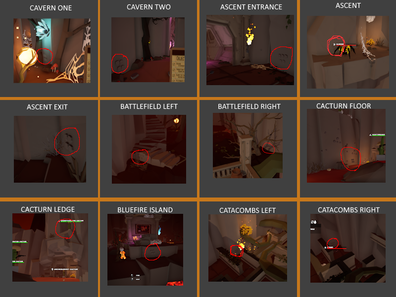
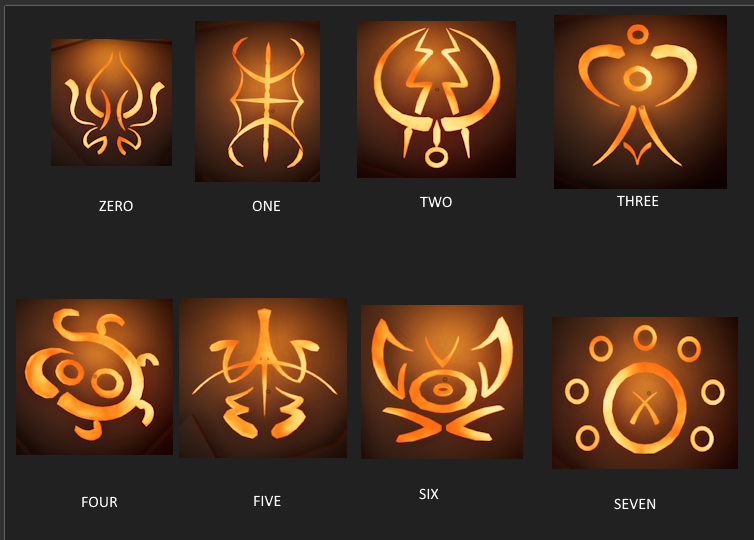
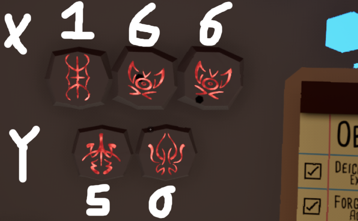

There are 12 locations where runes can spawn, shown below :

Bringing a blue torch to those spot will reveal symbols (The number of and symbols are random per player), 4 of each will be colored
Each Symbol corresponds to a number, delimited by the number of bump on that seal in the portal in front of the spider god's door, as shown below :

With this in mind, each colored rune is actually an X/Y coordinate and a color :

The current theory is that by plotting these symbols, we can get an image that will help us unlock the "Cheat Code" item
Kill it With Fire 2 Mosaic
For each of your Runes (including black), enter the X and Y coordinate of the pixel, along with the color, and press "Submit"